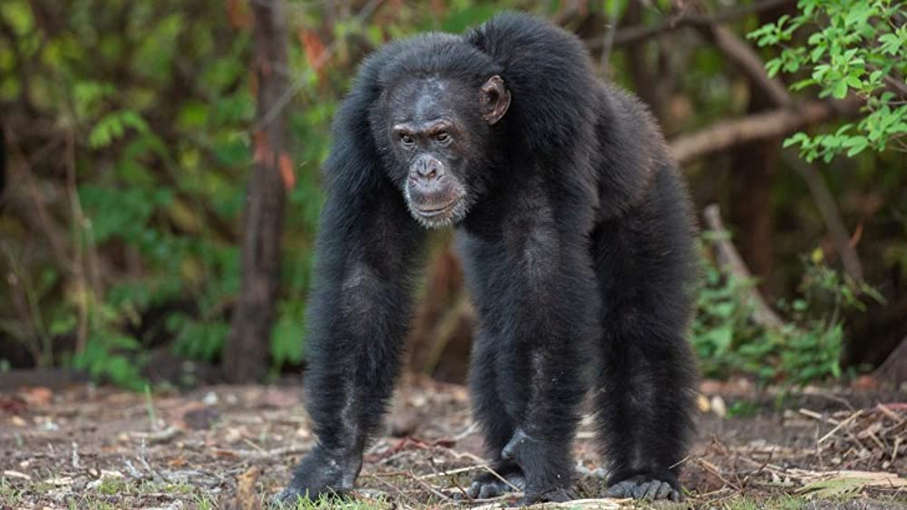

|  |
The chimpanzee (Pan troglodytes), also known simply as chimp, is a species of great ape native to the forest and savannah of tropical Africa. It has four confirmed subspecies and a fifth proposed subspecies. The chimpanzee and the closely related bonobo are classified in the genus Pan. Evidence from fossils and DNA sequencing shows that Pan is a sister taxon to the human lineage and is humans' closest living relative. The chimpanzee is covered in coarse black hair, but has a bare face, fingers, toes, palms of the hands, and soles of the feet. It is larger and more robust than the bonobo, weighing 40–70 kg (88–154 lb) for males and 27–50 kg (60–110 lb) for females and standing 120 to 150 cm (3 ft 11 in to 4 ft 11 in).
The chimpanzee lives in groups that range in size from 15 to 150 members, although individuals travel and forage in much smaller groups during the day. |